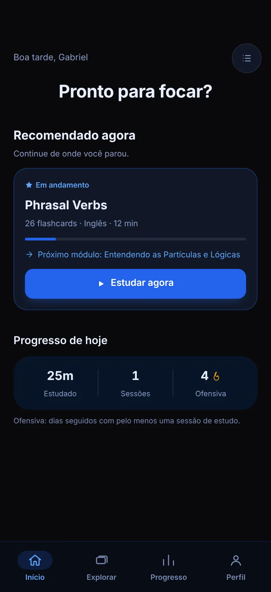
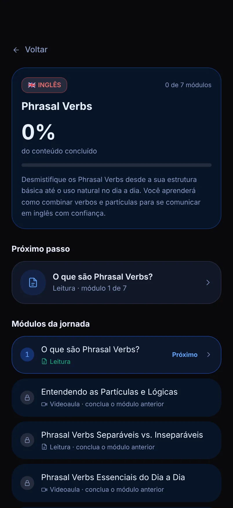
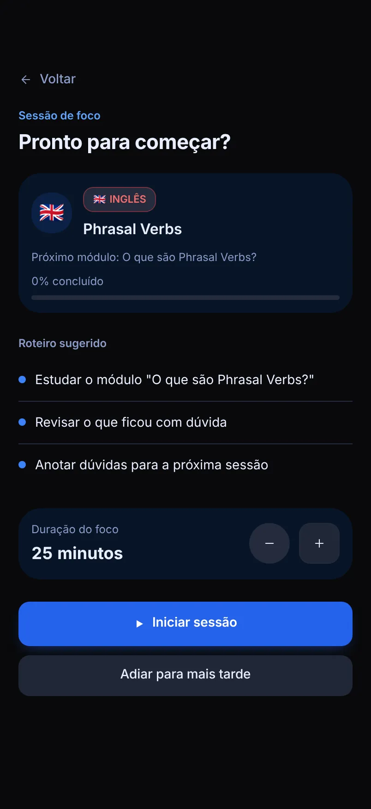
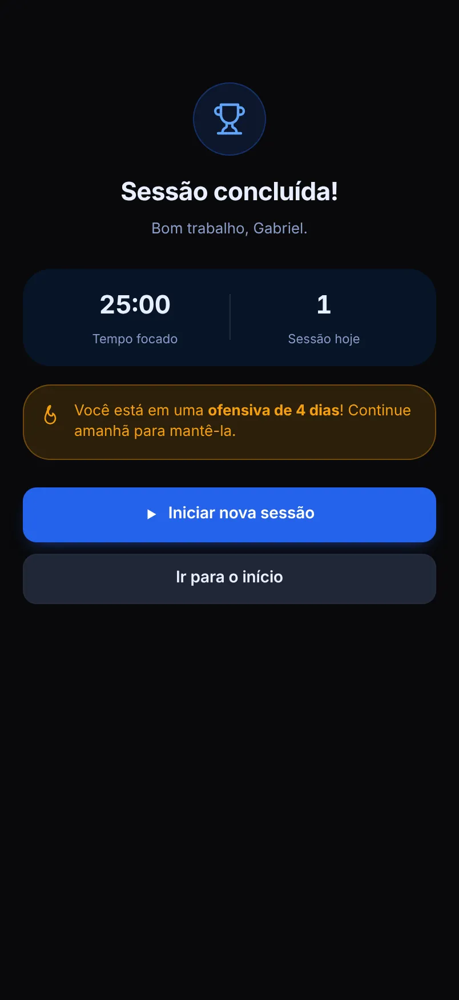
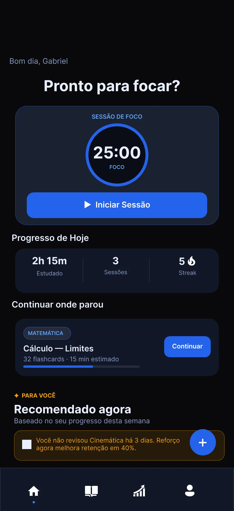
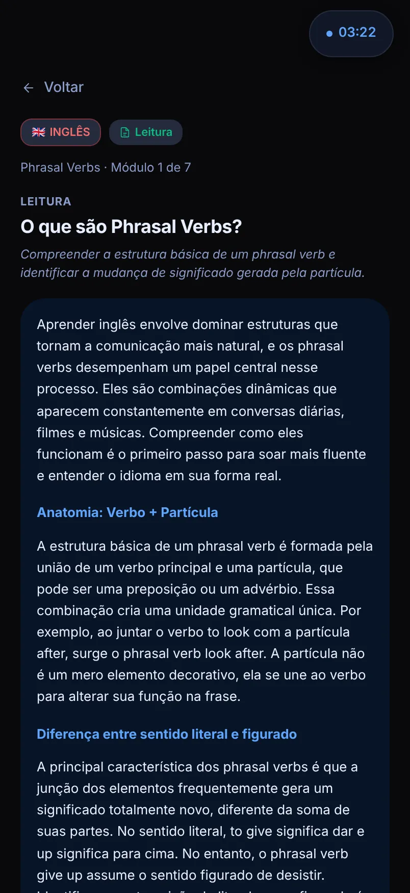
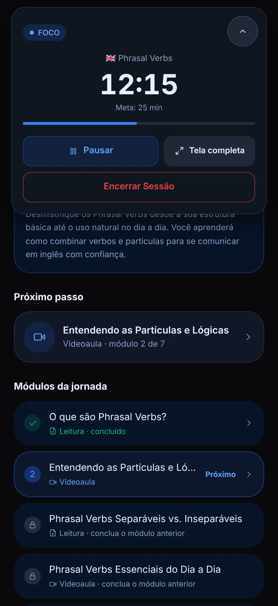
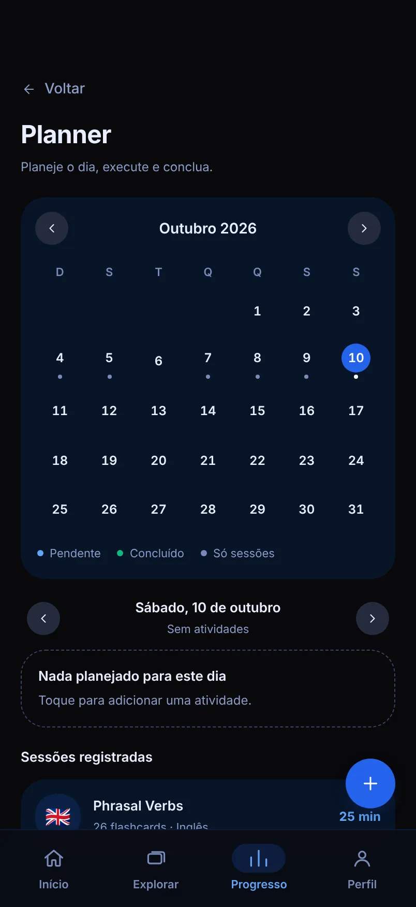
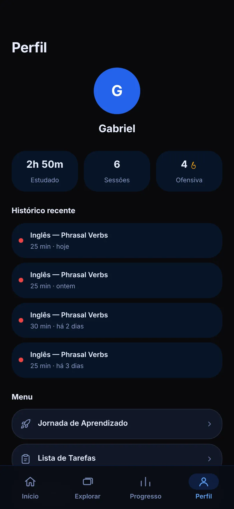

Study
Aplicativo web que transforma um tema em uma trilha de estudo, com videoaula, leitura, prática e avaliação, e usa sessões de foco para mostrar o progresso. Está no ar e pode ser testado.
Como ler este case. Cada afirmação importante traz uma etiqueta que diz de que tipo ela é:
- Implementadoexiste no produto que está no ar.
- Designdecisão de produto ou de interface.
- Hipótesepremissa que ainda não foi validada com usuários.
- Em breveainda não existe.



Nesta páginaVisão do produto
Visão do produto
O Study organiza o estudo em torno de um tema: a pessoa escolhe o que quer aprender, segue uma trilha em ordem e registra o tempo que realmente dedicou.
Em Explorar, a pessoa busca um assunto e o adiciona à sua coleção. O Study monta uma jornada de módulos ordenados: videoaula, leitura, prática com flashcards e avaliação. Sessões de foco, planner e progresso mostram o que foi feito. Implementado
- Estado
- No ar, na demo pública. A versão exibida nas Configurações do app é a 1.0.0.
- Plataforma
- Web, em uma coluna pensada para celular. Em telas largas, a coluna fica centralizada.
- Idioma
- Português.
- Minha atuação
- Design de produto, interface e design system. O app traz o crédito “Design System by Gabriel Rocha” nas Configurações.
- Implementação
- Descrita na seção Como foi construído.
- Dados do usuário
- Ficam salvos no navegador do aparelho.
As telas deste case usam dados de demonstração: perfil e histórico de uso fictícios.
Problema que o produto aborda
Quem estuda por conta própria encontra muito conteúdo e pouca estrutura. Decidir o que estudar, em que ordem e por quanto tempo vira um trabalho antes mesmo de começar a estudar.
Não fiz pesquisa com estudantes. Este é o problema que o produto se propõe a resolver, não um problema que eu tenha validado.
O que o produto assume
- A ordem importa. Os módulos de uma jornada liberam em sequência, da videoaula à avaliação final. Design
- Esforço real vale mais que intenção. Progresso, horas e ofensiva vêm das sessões de foco registradas, não de itens marcados à mão. Design
- Concluir precisa de um critério claro. A avaliação final pede nota mínima de 7,0. Design
Objetivos e proposta de valor
Escolha um tema, siga a trilha, estude com foco e veja o progresso, sem montar nada à mão.
- Tirar da pessoa o trabalho de decidir por onde começar.
- Reunir vídeo, leitura, prática e avaliação no mesmo lugar.
- Registrar o esforço real, com sessões de foco e ofensiva de dias seguidos.
- Mostrar a evolução por matéria e por semana.
- Manter a interface simples: quatro abas e uma ação principal por tela.
Público e necessidades
O público de partida são pessoas que estudam por conta própria, no celular, em sessões curtas. O tempo de foco padrão é de 25 minutos, e dá para ajustá-lo de 5 a 120. Não houve entrevistas nem testes com esse público.
Necessidades consideradas no desenho
- Saber o que estudar agora, sem escolher entre dezenas de opções.
- Continuar de onde parou, mesmo depois de dias.
- Registrar tempo e sequência de dias estudados.
- Ver a evolução por matéria.
- Estudar sem sair do app: vídeo, leitura e prática na mesma trilha.
Escopo e MVP
O recorte que está no ar fecha o ciclo completo de estudo: escolher, estudar, registrar e acompanhar. Ficaram para depois as pausas do Pomodoro, os sons de sessão, o lembrete diário e as notificações, que o próprio app lista como Em breve. Não documentei um método formal de priorização.
| Funcionalidade | Estado |
|---|---|
| Explorar, coleção e criação de conteúdo próprio | Implementado |
| Jornada de aprendizado com módulos em ordem | Implementado |
| Videoaula, leitura, prática e avaliação | Implementado |
| Sessão de foco com cronômetro | Implementado |
| Planner e lista de tarefas | Implementado |
| Progresso, ofensiva e perfil | Implementado |
| Login com Google | Implementado |
| Temas claro, escuro e do sistema | Implementado |
| Pausas do Pomodoro, sons, lembrete diário e notificações | Em breve |
Arquitetura da informação e jornada
A navegação principal tem quatro abas, com texto e ícone. Tudo o que não cabe nelas fica no menu do Perfil. Design
Início
- Pronto para focar?
- Recomendado agora
- Progresso de hoje
- Lista de tarefas
Explorar
- Busca e categorias
- Jornada de aprendizado
- Minha coleção
- Descobrir novos conteúdos
- Criar conteúdo
Progresso
- Progresso médio
- Últimos 7 dias
- Progresso por matéria
- Planner
Perfil
- Estatísticas e histórico
- Jornada, tarefas e matérias
- Configurações
- Ajuda e sair
O caminho de quem estuda
- Buscar um tema em ExplorarA pessoa digita um assunto ou escolhe uma categoria.
- Adicionar à coleçãoO Study monta a trilha de módulos para aquele tema.
- Abrir a jornadaOs módulos aparecem em ordem; o próximo fica em destaque e os seguintes ficam bloqueados.
- Estudar o móduloVideoaula, leitura, prática com flashcards e, no fim, a avaliação.
- Iniciar uma sessão de focoUma tela de pré-sessão define roteiro e duração; depois vem o cronômetro e o resumo da sessão.
- Acompanhar o progressoTempo estudado, sessões, ofensiva e evolução por matéria.



Processo de design e decisões de interface
Desenhei a interface no Figma e a mantive como um design system com tokens de cor, superfícies e estados. A paleta abaixo vem dos tokens do produto. Implementado
- Fundo#09090B
- Superfície#111827
- Ação principal#2563EB
- Texto#E8EEFF
- Texto secundário#8B9CC8
- Videoaula#60A5FA
- Leitura#10B981
- Prática#F59E0B
- Avaliação#A78BFA
Decisões de interface
Tema do sistema, claro ou escuro
Por padrão o app segue o tema do aparelho, e o escuro é o ponto de partida quando o sistema não informa. A escolha fica salva no navegador. No tema claro, as cores dos módulos escurecem para manter o contraste.
ImplementadoUma cor por tipo de módulo
Videoaula, leitura, prática e avaliação têm cor, ícone e rótulo próprios, então a informação nunca depende só da cor.
DesignCores de feedback não identificam matérias
Verde, âmbar e vermelho ficam reservados a sucesso, alerta e erro, para que ninguém confunda uma matéria com um estado.
DesignMetas de acessibilidade nos tokens
Texto com contraste mínimo de 4,5:1 sobre as superfícies, contorno de campos com pelo menos 3:1, controles de toque de 44 px, rótulos para tecnologias assistivas e respeito à preferência por movimento reduzido.
Design
Do Figma ao produto
A Home implementada mantém a pergunta “Pronto para focar?” e o bloco de progresso do dia, mas mudou em quatro pontos em relação ao mockup. Design
- O cronômetro circular e o botão Iniciar Sessão saíram da Home. Hoje a sessão começa por uma tela de pré-sessão, com roteiro e duração ajustável.
- “Continuar onde parou” e “Recomendado agora” viraram um só cartão de recomendação.
- A barra de abas ganhou rótulos de texto, além dos ícones.
- “Streak” virou “Ofensiva”, com uma frase que explica o termo.

Funcionalidades desenvolvidas
Tudo o que está abaixo existe no produto. O que ainda não existe aparece com a etiqueta Em breve.
Explorar e coleção
Busca por tema, categorias e coleção pessoal. Também dá para criar um conteúdo próprio, com título, matéria, tipo e duração.
ImplementadoJornada de aprendizado
Módulos em ordem, com o próximo em destaque e os seguintes bloqueados até a conclusão do anterior.
ImplementadoVideoaulas
Cinco vídeos curados por tema a partir da API do YouTube, com filtros para conteúdo educacional.
ImplementadoLeitura
Texto explicativo do módulo, gerado a partir do tema e validado antes de chegar à tela.
ImplementadoPrática
Flashcards por tema, de 4 a 12 cartões.
ImplementadoAvaliação
Quiz de 10 questões, cada uma com uma alternativa correta, e nota mínima de 7,0.
ImplementadoSessão de foco
Pré-sessão com roteiro, cronômetro de 5 a 120 minutos, pausa, tela cheia, encerramento e resumo. Um cronômetro flutuante acompanha a navegação.
ImplementadoPlanner
Calendário mensal com itens por dia, como estudo, revisão, prova, tarefa e lembrete. Um item pode iniciar uma sessão de foco.
ImplementadoLista de tarefas
Tarefas por matéria, com marcação de concluído e exclusão confirmada.
ImplementadoProgresso e ofensiva
Média de progresso, tempo estudado, últimos 7 dias, evolução por matéria e dias seguidos de estudo.
ImplementadoLogin e configurações
Login com Google, duração padrão do foco, tema claro, escuro ou do sistema e ajuda dentro do app.
ImplementadoPomodoro completo e lembretes
Pausas curtas e longas, sons de início e fim de sessão, lembrete diário e notificações.
Em breve



Como foi construído
Esta seção descreve o que existe no código do produto. Implementado
- Front-end
- Um único arquivo HTML, com React 18 e Tailwind CSS carregados por CDN e compilados no navegador. Não há etapa de build.
- Servidor
- Node 20 ou superior e Express 5. O mesmo servidor entrega o app e a API.
- Rotas da API
- Jornada de aprendizado, leitura, quiz, flashcards, resumo da matéria, vídeos e verificação de saúde.
- Dados
- No navegador do usuário. O servidor guarda em disco apenas um cache das respostas geradas.
- Hospedagem
- Render, plano gratuito.
Desafios técnicos
Respostas de IA nem sempre vêm no formato esperado. O servidor valida cada resposta antes de entregá-la: o quiz precisa de 10 questões com uma alternativa correta, os flashcards ficam entre 4 e 12, a jornada exige ao menos dois módulos de estudo mais uma revisão e uma avaliação finais, e a leitura precisa ter pelo menos 60 palavras. Quando a resposta não passa, o servidor tenta de novo e passa por uma cadeia de modelos alternativos.
Cota, tempo e custo. As chamadas à IA entram em uma fila (duas ao mesmo tempo, até 40 esperando) e têm um orçamento de 38 segundos por pedido. As respostas ficam em cache por 24 horas, e uma resposta antiga pode ser reaproveitada por até 14 dias se o serviço falhar. Há limite de requisições por IP.
Vídeos adequados. A busca no YouTube devolve cinco vídeos por tema e aplica filtros de palavras bloqueadas e de termos educacionais, para reduzir resultados fora de contexto.
Entradas do usuário dentro de um prompt. Os textos que a pessoa digita são tratados e escapados antes de entrar nos prompts enviados à IA.
IA e serviços externos
API do Gemini
Gera a jornada de módulos, o texto de leitura, o quiz, os flashcards e o resumo de cada matéria.
ImplementadoAPI de dados do YouTube
Busca e filtra as videoaulas de cada tema.
ImplementadoLogin com Google
Identifica a pessoa no navegador, com o serviço de identidade do Google.
ImplementadoAs chaves das APIs ficam no servidor, em variáveis de ambiente, nunca no navegador.
O conteúdo gerado não passa por revisão humana. Os validadores garantem o formato, não a precisão: um texto bem formatado ainda pode conter erros.
Estado atual e demo
O Study está no ar e pode ser testado. Antes de abrir, vale conhecer os limites.
- Acesso
- É preciso entrar com uma conta Google.
- Hospedagem gratuita
- O servidor dorme depois de cerca de 15 minutos sem uso. O primeiro acesso depois disso pode demorar.
- Cotas das APIs
- A geração de conteúdo depende das cotas da IA e do YouTube. Se uma geração falhar, tente de novo mais tarde.
- Seus dados
- Ficam no navegador. Limpar os dados do site apaga o progresso.
- Código-fonte
- Ainda não está em um repositório público.
O login com Google acontece no navegador, e o servidor ainda não valida a identidade. Por isso o Study não tem contas de verdade nem sincronização entre aparelhos.
Como testar em poucos minutos
- EntrarAbra a demo e entre com sua conta Google.
- Escolher um conteúdoEm Explorar, escolha um conteúdo e adicione à sua coleção.
- Abrir a jornadaEntre na jornada e inicie o primeiro módulo.
- Fazer uma sessão de focoInicie uma sessão, encerre e veja o resumo.
- Ver o progressoAbra a aba Progresso para ver tempo estudado e ofensiva.
Aprendizados e próximos passos
O que o produto me mostrou
Interface de IA é interface de falha
Respostas geradas podem vir lentas, incompletas ou erradas. Carregamento, erro e nova tentativa fazem parte do desenho, não são detalhe técnico.
Termo novo precisa de legenda
“Streak” virou “Ofensiva” e ganhou uma frase explicando o que conta como dia de estudo. Um nome em português não basta se o conceito é novo.
Separar o que existe do que se assume
Escrever este case me obrigou a dizer o que o produto faz e o que ele só supõe sobre quem estuda.
Próximos passos
Já listados no app como Em breve Em breve
- Pausas curtas e longas do Pomodoro.
- Sons de início e fim de sessão.
- Lembrete diário e notificações.
Passos que eu daria em seguida
- Validar a hipótese do problema com entrevistas e testes de usabilidade com estudantes.
- Validar o login no servidor e criar contas, para sincronizar os dados entre aparelhos.
- Separar o front-end em módulos e gerar um build, sem compilar no navegador.
- Permitir que a pessoa sinalize erros no conteúdo gerado por IA.
- Testar a acessibilidade com tecnologias assistivas e com pessoas reais.